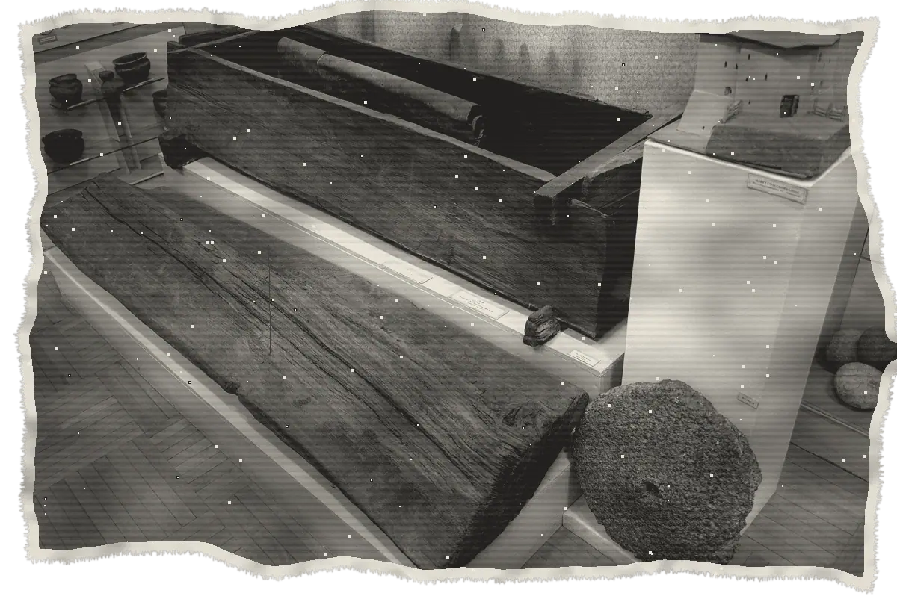

ТОМ I · ЛИСТ B · 02 / 09
ТЕЛО
Омовение, одевание, вынос
Прежде чем стать памятью, умерший — предмет, с которым нужно обращаться. Это обращение и есть обряд.
Документировано в XIX–XX веках · Европейская Россия · Православная практика с местными обычаями

B / 01
Обмывание, и куда девается вода
Обзор восточнославянской похоронной обрядности у Зеленина начинается с обмывания: тело обмывают тёплой водой и одевают в новое, а во многих местах это когда-то делали ещё при живом умирающем, потому что верили: на том свете человек появляется в той одежде, в какой умер. Поскольку уловить миг смерти трудно, предполагает он, и стали обмывать уже умершего. Рядом с умирающим ставили сосуд с водой, чтобы душа в нём омывалась; некоторые говорили, что видели, как вода колышется. Сосуд стоял на столе или подоконнике сорок дней, и кое-кто считал, что душа пьёт эту воду (Зеленин 1991, с. 345–346).
Для русских он перечисляет, что делали со всем, что употреблялось при последнем омовении: сосудом, мочалкой, соломой, на которой умер человек, иногда досками. Это уносили в поле или за околицу, а сосуд чаще всего разбивали. Весной разрешалось бросать вещи в разлившуюся реку; если умирал хозяин дома, их нередко закапывали во дворе, «чтобы домовой не переводился» (со ссылкой на Завойко, с. 91). Место, где они лежали, внушало ужас. Воду, оказавшуюся в доме в момент смерти, не пили, а выливали. Беременная женщина не должна обмывать покойного, иначе её ребёнок умрёт. Украинцы, добавляет он, выливали воду там, где не ходят ни люди, ни скот, — между двумя постройками или под сушильней кукурузы; это сравнение, а не русское свидетельство (с. 346, 349).
Вопрос о том, кто обмывал умершего и что за это получал, детально документирован этнографическими сводками (Кремлева 1999, с. 518–521; Байбурин 1993, с. 102–108). Омовение поручалось почти исключительно пожилым женщинам последетородного возраста («мыльщицам» или «обмывальщицам»), вдовам или некровным соседкам. Близким родственникам — матерям, жёнам, дочерям — обмывать покойного строжайше запрещалось: в народе говорили, что слёзы близких «жгут» умершего, а сам ритуал был направлен на разрыв плотских связей с живым домом. Денежная плата за омовение никогда не взималась: брать деньги за работу с мертвецом считалось тяжким грехом. Вместо платы обмывальщицы получали ритуальные дары «на помин души»: полотенца, отрезы холста, платки, омывальное мыло или часть одежды умершего.
Барсов даёт краткую олонецкую версию той же последовательности. Как только замечали, что человек умирает, на окно ставили чашку с водой; если вода колыхалась, говорили, что «душенька моется». Для омовения тела приглашали очень старых женщин; были ли они роднёй и платили ли им, он не сообщает. Покойника обычно моют тёплой водой на соломе, против трубы, из глиняной посуды, дважды натирая мылом; в некоторых местах, например в Кондушах, у покойниц стригут волосы и кладут их в гроб. Мыло затем бросают в реку и туда же выливают воду, но иногда оставляют и то и другое: колдуны, пишет он, используют воду, чтобы испортить новобрачных, человек, которого напоят ею, будет чахнуть, а мыло применяют против лихорадки (1872, с. 302–303). Колдовские представления здесь переданы, а не наблюдались; текст не называет информанта.

B / 02
Одежда и запрет железа
Многие старики шили смертную одежду заранее и надевали её перед большими праздниками и в сильную грозу; одежда была по большей части белая. Если её шили на уже умершего, швы делали так, чтобы остриё иглы смотрело от шьющего к покойному, кое-где левой рукой, а старую рубашку, если её надо было снять, разрывали. Верхней одежды на умершего не надевали; её заменял саван — то белая рубаха, закрытая, как мешок, то полотнище, в которое заворачивали и перевязывали длинной полосой. Новую нарядную или современную одежду не употребляли. Вместо сапог — лапти или лёгкая тканая обувь (калиги); если покойный уже обут в сапоги, из них вынимали железные гвозди (Зеленин 1991, с. 346–347).
Крест и пояс были обязательны: крест иногда бывал медный (серебряный не разрешался), нередко — деревянный. Женщине фартук не надевали никогда; мужчине всегда шапку, а если священник возражал, клали рядом. Умершую незамужней девушку одевали празднично, как на свадьбу: кольцо на средний палец правой руки, подарки от родни, как на свадьбе, свадебный каравай на крышку гроба; из холостых могли избрать ей «жениха», который шёл за гробом; нечто подобное делали и при погребении молодого мужчины. Зеленин обобщает эти обычаи для восточных славян, не датирует их и не во всех подробностях отделяет русских от остальных; потому каждая подробность здесь относится к региону и группе, которые он называет, если называет.
Барсов (1872, с. 303) пишет, что в некоторых местах умирающего ещё до смерти спрашивали, во что он велит себя одеть. Для Петрозаводского, Олонецкого и Повенецкого уездов он перечисляет белые сапоги или башмаки, сшитые одной дратвой, рубаху с поясом и костяным гребешком, поверх неё белый балахон с кушаком и холст как покрывало; во многих приходах Каргопольского уезда поверх холщовой рубашки надевают саван. Всегда надевают крест на шерстяной нитке, а на старообрядца ещё и чётки. Одежду для мёртвого шьют «на изнанку», направляя иглу не к себе, а от себя, что согласуется с правилом шва выше. Его белые сапоги или башмаки расходятся с лаптями и мягкой обувью у Зеленина; речь о разных местах, и здесь их не подгоняют друг к другу.
B / 03
Гроб и что в него клали
Русское слово домовина и более старое колода называют гроб, который когда-то делали из цельного ствола, с маленьким окошком и часто закруглённым головным концом; по Зеленину, ко времени его книги гробы делали из досок, скрепляя не железными гвоздями, а деревянными, кое-где лыком. Благочестивые люди заранее делали себе гроб сами, что считалось знаком долгой жизни, сыпали в него зерно и раздавали зерно нищим (1991, с. 348). Стружки от досок и сухие листья с банного веника были обычной подстилкой; подушку делали из ткани смертной одежды или из сена и зашивали с трёх сторон.
Зеленин перечисляет, что клали внутрь: хлеб, иногда соль и масло, яйцо на Пасху, до недавнего времени бутылку водки мужчине; медные монеты, завязанные в узелок на поясе, и деньги в могилу. Монеты осмысляли по-разному: как плату за место погребения, как способ удержать скот, чтобы он не ушёл за хозяином (ОР РГО, III, 1102), или, в позднейшем прочтении, как плату за перевоз через огненную реку или выкуп за долги. Для белорусского Полесья он перечисляет личные вещи — трубку, кисет, детскую игрушку, мелкий инструмент ремесленника, — которых не связывает с русскими. Переход от самодельного гроба к покупному прослеживается по этнографическим материалам конца XIX — начала XX века (Кремлева 1999, с. 521–523). В глухих деревнях самодельные колоды или дощатые гробы, сколоченные деревянными нагелями без гвоздей, сохранялись вплоть до начала XX века; старики нередко заготовляли гроб заранее за годы до кончины, хранили его на сеновале или в клети и засыпали рожью «на долгий век». В фабричных посёлках, пристанционных сёлах и пригородных уездах с 1880-х годов столярные мастерские и лавки наладили продажу типовых сосновых гробов (простые крашеные гробы стоили от 1 рубля 50 копеек до 3–5 рублей). В отдалённых северных и сибирских деревнях традиция самостоятельно тесать домовину без единого гвоздя продержалась и в советский период.
Барсов (1872, с. 302, 304–305) описывает олонецкий гроб. У суйсарцев и заонежан это домовище из сухих досок, продолговатый ящик; в некоторых приходах, в том числе в Сямозерском и Бадогах, по бокам против плеч покойного делают отверстия со стёклами, в других стёкла кладут внутрь. В частях Ладейнопольского, Повенецкого и Каргопольского уездов (назван Локшморецкий приход) гроб — выдолбленный ствол осины или сосны, тоже с кусочком стекла. Щепки и стружки от гроба бросают в озеро или вывозят в лес. В Корели и других местах подстилкой и набивкой подушки служат листья, сбитые с веников. Дары различаются по местам: хлеб в Нименском приходе Каргопольского уезда, пироги в Брусне Петрозаводского уезда, иголка для женщин в Верховье Олонецкого уезда, яйцо тому, кто умер на Пасху, срезанные ногти для подъёма на стеклянную гору. Это местные заметки Барсова; их не обобщают.
| Предмет | Документированная функция | Свидетельство |
|---|---|---|
| Гроб (гроб) | Вместилище; его несут до могилы; крышку закрывают во время обряда | документировано |
| Смертная одежда | Многие старики шили заранее, чаще белая; без железа и металлических пуговиц | документировано |
| Погребальная ткань / саван | Обёртывает или покрывает тело; региональные формы различаются | документировано |
| Сосуд, мочалка, солома после омовения | Уносили в поле или за околицу, сосуд разбивали; или закапывали во дворе (русские, по Зеленину) | документировано |
| Бумажный венчик на лбу | Предмет, который выдаёт церковь при православном погребении | здесь не проверено |


B / 06
Куда уходит вода и что хранит мыло
Два вологодских описания дают утилизации воды после обмывания цель, и цели различаются. Для Средней Сухоны страница-обзор сообщает, что воду выливали особым образом, с размаху, у угла дома, во дворе и на перекрёстках, а мыло после омовения затем использовали, чтобы усмирить беспокойного члена семьи или беспокойную скотину, с приговором, уподобляющим их умершему, который уже не брыкается. С. Адоньева, говоря о вологодской традиции, записанной в конце XX — начале XXI века, сообщает, что воду, мочало и мыло уничтожают, чтобы их нельзя было использовать во вредоносной магии. В одном рассказе остатки — лекарство, в другом — опасность. Большая российская энциклопедия, прочитанная только в выдержке, называет обмывание обязательной частью обряда и замечает, что обмывать, одевать и делать гроб могут специально нанятые люди. Атлас не решает, описывают ли два вологодских рассказа два поверья или одно, рассказанное дважды; он сохраняет оба и считает общей почвой прежнее утверждение листа о запрете вокруг утилизации.
Академическая этнография (Кремлева 1999, с. 519–520; Байбурин 1993, с. 102–106) подтверждает, что в европейской России вода после омовения («мёртвая вода»), мыло и мочалки наделялись острой ритуальной амбивалентностью. Вода, впитавшая сакральную нечистоту физической смерти, выливалась в глухие, нехоженые места (под глухой угол избы, за плетень, под крапиву или в особую ямку), где не ступала нога человека и скотины. Мыло же либо закапывали, чтобы колдуны не навели на него порчу, либо клали в гроб, либо сохраняли как сильнодействующее средство — чтобы обмывать болезни или усмирять беспокойную скотину, уподобляя её неподвижному покойнику.
Аппарат источники · связанные листы · термины
Источники этого листа
- culture-sukhona Обзор объекта на Культура.рф (составитель в прочитанном фрагменте не назван) — Похоронный обряд в традиции Средней Сухоны (n.d.)
- adonyeva2026 Адоньева, С. (интервью) — «Ух, был да и нету, был да и нету»: антрополог — о русских традициях похорон (2026)
- bre-eslavic-funeral-washing Большая российская энциклопедия (автор статьи не прочитан) — Восточнославянская похоронная обрядность (n.d.)
- zelenin1927 Зеленин, Д. К. — Восточнославянская этнография (перевод книги «Russische (Ostslavische) Volkskunde», Берлин–Лейпциг, 1927, пер. К. Д. Цивиной) (1991 (German original 1927))
- barsov1872 Барсов, Елпидифор Васильевич — Причитания Северного края (1872–1886)
- kremleva1999 Кремлева, Ирина А. — Похоронно-поминальные обычаи и обряды (1999)
- baiburin1993 Байбурин, Альберт Кашфуллович — Ритуал в традиционной культуре (1993)
Ссылки, даты обращения и ограничения — в списке источников.